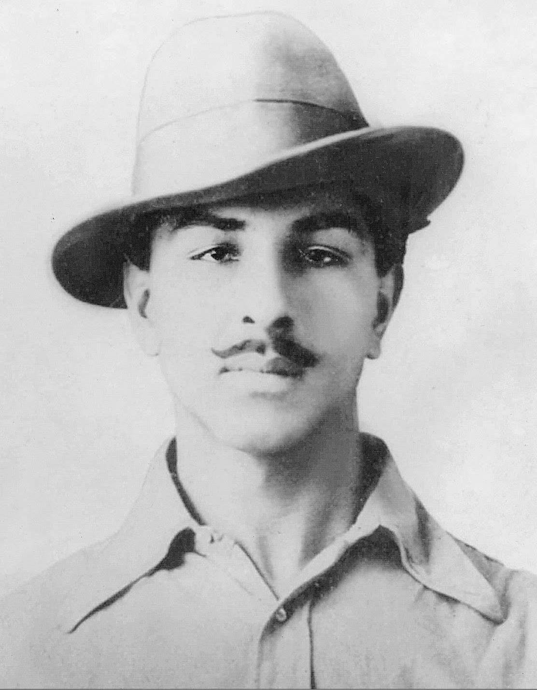
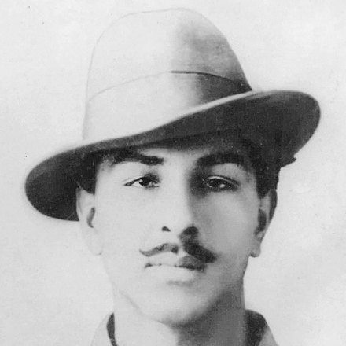

28 सितम्बर 2026 · भगत सिंह जयंती
इंकलाब 28
भगत सिंह जयंती पर नशे की सामाजिक स्वीकृति के विरुद्ध एक जन-संकल्प

शहीद-ए-आज़म भगत सिंह ने अन्याय और सामाजिक बुराइयों के विरुद्ध विचार और साहस की मशाल जलाई। आइए, उनकी जयंती पर उसी चेतना को आगे बढ़ाते हुए नशे और उसकी सामाजिक स्वीकृति के विरुद्ध इंकलाब का हिस्सा बनें।
28 सितम्बर को सपरिवार उपवास रखें, अपने गाँव / शहर / संस्था में ‘लोकसंकल्प सभा’ आयोजित करें, लोगों को जोड़ें और नशा मुक्त समाज का संकल्प लें।
देश और दुनिया में कहीं से भी, कोई भी इसमें जुड़ सकता है।
इंकलाब नशे के विरुद्ध।
इंकलाब नशे की सामाजिक स्वीकृति के विरुद्ध।
इंकलाब एक स्वस्थ और जागरूक समाज के लिए।
इंकलाब 28 से जुड़ें
नीचे अपना पंजीकरण करें
पंजीकरण करते ही आपको अपना प्रमाण-पत्र यहीं मिल जाएगा, जिस पर आपका पंजीकरण क्रमांक अंकित होगा।
पंजीकरण 28 सितम्बर तक खुला रहेगा
यह पृष्ठ 28 सितम्बर, भगत सिंह जयंती के लिए है। पंजीकरण का फ़ॉर्म उसी अवधि में यहीं खुला मिलेगा।
आपका संकल्प दर्ज हो गया।
आपका पंजीकरण क्रमांक :
नीचे आपका प्रमाण-पत्र है। इसे डाउनलोड कीजिए और अपने गाँव, विद्यालय तथा परिचितों तक यह संदेश पहुँचाइए।

डिजिटल प्रमाण-पत्र
इंकलाब 28
भगत सिंह जयंती, 28 सितम्बर 2026
यह प्रमाणित किया जाता है कि
आपका नामने भगत सिंह जयंती पर सपरिवार उपवास का संकल्प लेकर नशे और उसकी सामाजिक स्वीकृति के विरुद्ध संचालित ‘लोकसंकल्प’ जन-अभियान को मजबूती प्रदान की है।
नई किरण नशा मुक्ति केंद्र, राजकीय डूंगर महाविद्यालय, बीकानेर आपकी इस सामाजिक प्रतिबद्धता के लिए हार्दिक आभार व्यक्त करता है तथा अपेक्षा करता है कि आप अधिकाधिक लोगों को इस जन-अभियान से जोड़कर नशा मुक्त समाज के निर्माण में सहभागी बनेंगे।
“इंकलाब नशे के विरुद्ध, संकल्प नशा मुक्त समाज का”
नशा मुक्त भारत अभियान के अंतर्गत
नई किरण नशा मुक्ति केंद्र
राजकीय डूंगर महाविद्यालय, बीकानेर
लोकसंकल्प : नशे की सामाजिक स्वीकृति के विरुद्ध जन-अभियान
दिनांक आज
पंजीकरण क्रमांक :
इंकलाब नशे के विरुद्ध।
फेसबुक और X पर तस्वीर अपने आप नहीं जाती। पहले PDF डाउनलोड कीजिए, फिर पोस्ट में जोड़ लीजिए। फ़ोन पर “साझा करें” से प्रमाण-पत्र सीधा भेजा जा सकता है।
अब यह दस लोगों तक पहुँचाइए
एक संकल्प से दस संकल्प बनते हैं। नीचे वाला संदेश तैयार है, बस भेजना है।
मैंने इंकलाब 28 में अपना नाम दर्ज करा दिया है। भगत सिंह जयंती, 28 सितम्बर को सपरिवार एक दिन का उपवास। नशे के विरुद्ध, और नशे की सामाजिक स्वीकृति के विरुद्ध। आप भी जुड़िए, दो मिनट लगते हैं। https://loksankalp.org/inqlab-28.html
सजीव आँकड़े
इंकलाब 28 से अब तक
पंजीकरण करते ही यह संख्या बढ़ जाती है।
कहाँ से कितने
आपके जिले से कितने जुड़े
संख्या उन सब लोगों की है जो उस जिले में उपवास रखेंगे।
यह संदेश आगे भेजिए
यह अभियान एक-दूसरे को भेजे गए संदेशों से ही गाँव-गाँव पहुँचा है।
इंकलाब 28 भगत सिंह जयंती, 28 सितम्बर को सपरिवार एक दिन का उपवास। नशे के विरुद्ध, और नशे की सामाजिक स्वीकृति के विरुद्ध। आप भी जुड़िए। नाम दर्ज कीजिए, प्रमाण-पत्र तुरंत मिल जाएगा। https://loksankalp.org/inqlab-28.html
शहीद-ए-आज़म की स्मृति में
एक संकल्प से दस संकल्प बनते हैं
अपने गाँव, वार्ड और विद्यालय में भी यह संदेश पहुँचाइए।